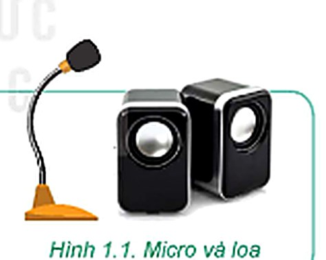
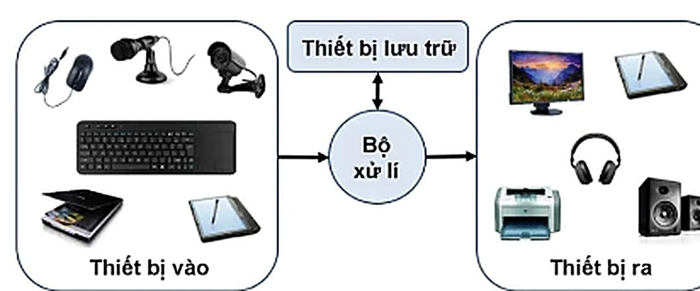
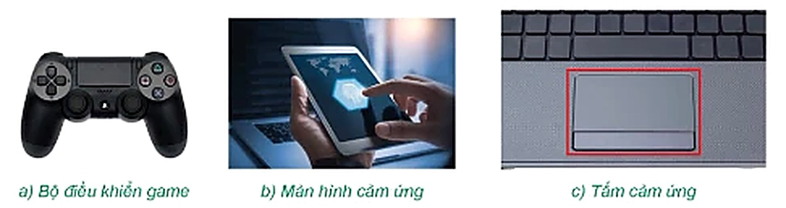
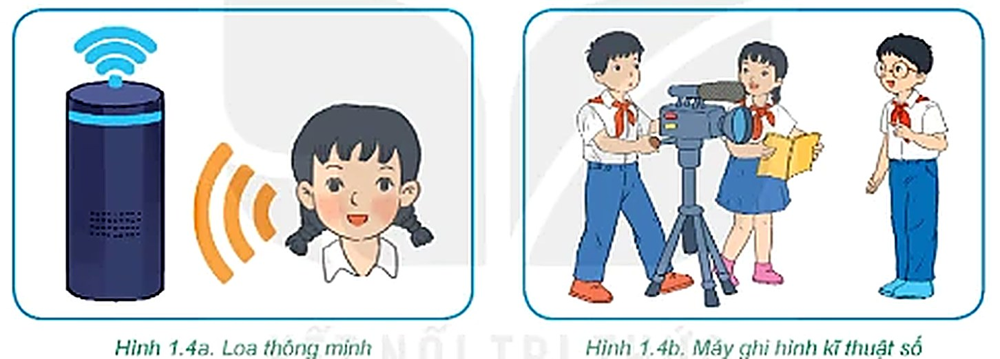

Dành cho giáo viên
Theo dõi lớp
| Học sinh / Nhóm | Đã nộp | Cập nhật |
|---|
Khởi động
Mở đầu
Phần 1
Thiết bị vào – ra
Hoạt động 1 Thiết bị vào – ra
Quan sát Hình 1.1 và trả lời các câu hỏi.

Hoạt động 2 Sự đa dạng của thiết bị vào – ra
Quan sát Hình 1.2 và Hình 1.3, sau đó trả lời các câu hỏi.


Thảo luận nhóm Xếp thiết bị vào đúng nhóm
Mỗi bạn tự chọn trước 4 thiết bị, sau đó cả nhóm thống nhất. Thiết bị nào nhóm còn tranh luận thì chọn ? để trình bày trước lớp. Câu hỏi gợi ý: thông tin đi vào máy tính hay đi ra khỏi máy tính?
Đọc hiểu Thiết bị vào – ra còn lưu trữ, xử lí dữ liệu
Đọc SGK trang 7 về loa thông minh và máy ghi hình kĩ thuật số, quan sát Hình 1.4.

Câu hỏi SGK trang 7
Phần 2
An toàn thiết bị
Hoạt động 3 Kết nối thiết bị vào – ra
Một máy tính để bàn có các cổng kết nối như Hình 1.5.

Thảo luận nhóm Nên làm hay không nên làm?
Câu hỏi SGK trang 9
Luyện tập
Luyện tập
Vận dụng